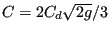
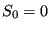
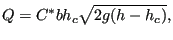
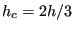
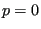
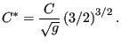

Next: Reservoir Up: Fluid Section Types: Open Previous: Sluice Gate Contents
A wear is a structure as in Figure 122 at the upstream end of a channel. The weir can occur in different forms such as broad-crested weirs (left picture in the Figure) and sharp-crested weirs (right picture in the Figure). The wear element in CalculiX can be used to simulate the part of the wear to the left of the highest point, which is the point at which critical flow is observed. The part to the right of this point (denoted by “L” in the figure) has to be modeled by a straight channel element with high slope or by a step element with negative step size (i.e. drop).
The volumetric flow  can be characterized by
a law of the form
can be characterized by
a law of the form
where C is a constant. For instance, in the formula by Poleni
  is coefficient smaller than 1 to be measured
experimentally [12]. The flow across a wear corresponds to the
flow underneath a sluice gate with infinite depth underneath the gate and critical conditions,
therefore (Equation (194), for
is coefficient smaller than 1 to be measured
experimentally [12]. The flow across a wear corresponds to the
flow underneath a sluice gate with infinite depth underneath the gate and critical conditions,
therefore (Equation (194), for  and
and
 |
(198) |
where now satisfies (by equating to the above equations and taking
 
 |
(199) |
The following constants have to be specified on the line beneath the *FLUID SECTION,TYPE=CHANNEL WEIR card (the width, the trapezoid angle, the slope and the grain diameter should be the same as for the downstream element immediately next to the weir; they are needed for the calculation of the critical height and normal height):
A wear can only be used at the upstream end of a channel. A wear in the middle of a channel has to be modeled by a step followed by a drop.
Example files: channel7.